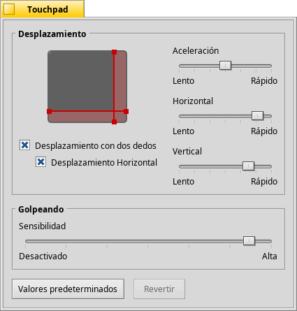

Touchpad
Touchpad
| Deskbar: | ||
| Ubicación: | /boot/system/preferences/Touchpad | |
| Configuración: | ~/config/settings/Touchpad_settings |
Este panel ofrece bastantes opciones de configuración relacionadas con el Touchpad que son interesantes cuando se esté usndo en una notebook.
Al arrastrar las líneas rojas horizontal y vertical en la representación del touchpad, se seleccionan el área de desplazamiento (ligeramente roja contra el área general de toque, en gris). Al mover un dedo en esa parte del pad se moverán las barras de desplazamiento de una ventana de forma correspondiente.
A la derecha hay deslizadores para seleccionar la aceleración de desplazamiento y la velocidad de desplazamiento horizontal y vertical.
La selección de aceleración decide cuán más rápida se desplaza una lista si se mueve sobre el área de desplazamiento muy rápido. Las velocidades de desplaamiento controlan la velocidad general cuando se usa el área de desplazamiento de manera "normal".
Debajo del gráfico del touchpad hay casillas de verificación para habilitar el "Desplazamiento con dos dedos" para el deslizamiento horizontal y vertical. Se mueven dos dedos en paralelo para mover las barras de desplazamiento de una ventana. Al menos para algunas personas, funciona mejor si con un dedo se mueve con un dedo de la mano izquierda y otro con uno de la mano derecha.
Si se siente cómodo con esta característica, puede usarla con la selección de áreas de desplazamiento y en su lugar utilizar todo el pad para la navegación normal.
Al fondo está otro deslizador para seleccionar la sensibilidad de clic al dar golpe. Si se ignoran sus golpes, incremente la sensibilidad. Si el sistem registra clics todo el tiempo, mientras todo lo que desea es mover el puntero del ratón, intente decrementarla.
| restablece todo a los valores predeterminados. | ||
| (Revertir) regresa las configuraciones que estuvieron activas cuando se abrió el cuadro de diálogo preferencias del Touchpad. |
Aquí hay un consejo no relacionado a las preferencias de Touchpad, pero cabe mencionarlo en el tema general:
¿Sabía que se puede arrastrar y colocar sólo con el touchpad, p. ej., sin usar los botones? Sólo haga doble clic sin levantar el dedo después del segundo clic. El icono elegido se pegará al puntero del ratón y podrá desplazarlo moviendo el dedo. Al levantar el dedo se soltará el icono.
Si el dedo alcanzara una orilla del touchpad mientras se arrastra un icono, pero el puntero del ratón todavía no haya alcanzado la orilla de la pantalla, ̉cómo puede mantener el objeto en movimiento? Tan pronto como levante su dedo, el icono se soltaría.
Dependiendo de su hardware, hay una linda característica: sólo deje su dedo sin levantarlo en la orilla del touchpad. El puntero del ratón se mantendrá moviendo en piloto automático.